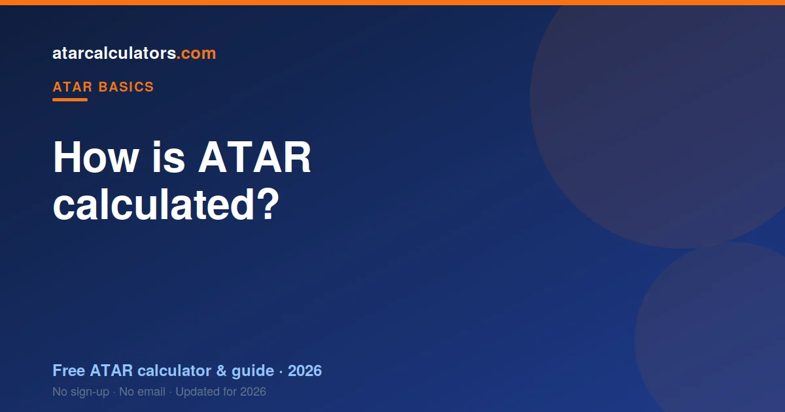

Your ATAR is calculated in three steps. First, your result in each subject is scaled to account for how strong the group taking it was. Second, your best scaled results are added into an aggregate. Third, that aggregate is ranked against your whole age group and turned into a percentile from 0.00 to 99.95. The details differ a little by state, but the three steps are the same everywhere.
Key takeaways
- Your ATAR comes from scaled results, not raw marks or a simple average.
- Scaling adjusts each subject so the same result means the same thing across subjects.
- Your best scaled scores are combined into an aggregate; weaker subjects count for less or not at all.
- The aggregate is ranked against your age group and turned into your ATAR.
- Most states require an English subject to count towards your ATAR.
- You cannot “game” scaling — a strong result in any subject beats a weak one in a high-scaling subject.
- Each state’s admissions centre does the sums, but the final ATAR means the same nationally.

Step 1: Your subjects are scaled
The first step is scaling. Every subject you take is adjusted so that a result in one subject is worth the same as the same result in another. This is done by the admissions centre, not your school.
Scaling works by looking at how the students in a subject perform across all of their subjects. If the group taking a subject is strong overall, that subject scales up. If the group is broader, it scales down. Your own ranking within the subject never changes — scaling only changes how your score counts towards your ATAR.
A quick example: a raw mark of 40 in a subject with a very strong cohort might scale up to 44, while the same raw 40 in a broad-entry subject might scale down to 36. Same raw mark, different scaled value, because the competition differs.
Why scaling exists
Scaling exists to be fair. Without it, a student who took easier subjects would have an advantage over one who took harder, more competitive subjects. Scaling removes that advantage, so no student is better or worse off simply because of the subjects they chose.
This is why the idea that “hard subjects scale up” is only half true. A subject scales up because the students in it are strong, not because the content is difficult. You can explore any subject’s real numbers with our HSC and VCE scaling calculators.
The practical lesson is freeing: you do not have to chase “high-scaling” subjects. You just have to do well in whatever you take, because scaling rewards your position, not the subject name.
Step 2: Your best scores form an aggregate
Once your subjects are scaled, your best scaled results are added together into a number called an aggregate. The exact rule depends on your state. Some states use your best four or five subjects; some add a portion of a fifth or sixth.
The key point is that your strongest subjects are what count. A weak subject often counts for less, or does not count at all, once your better results are in. This is why taking a safety subject you can do well in is a sound strategy.
Because only your best count, dropping a weak subject rarely helps as much as students think. If it was not going to make your top results anyway, it was already doing little to your aggregate.
The English requirement
In most states, you must have a result in an English subject for it to count towards your ATAR. This does not mean English has to be one of your best subjects. It means at least one English study needs to be part of the mix.
The rules vary. Victoria, for example, requires an English study in the aggregate. Queensland requires you to complete an English subject to be eligible for an ATAR, though it only counts if it is among your best five. Other states have their own version.
Whatever your state, the message is the same: take English seriously, because you cannot avoid it. Aim for the best English result you can, even if it is not your favourite subject.
Step 3: Your aggregate becomes a rank
The final step turns your aggregate into your ATAR. Every student’s aggregate is placed in order, from highest to lowest. Your position in that order is your percentile rank, and that is your ATAR.
Because it is a rank, your ATAR depends on how everyone else did, not just on your own aggregate. The student with the highest aggregate receives 99.95. The rest are spread down the scale to 0.00, in steps of 0.05.
This is also why your ATAR can only be finalised after every student’s results are in. Until then, no one knows the exact order, so no one can know the exact ranks.
A worked example, step by step
Let us follow one student through all three steps. Say their raw marks are: English 82, Maths 78, Chemistry 85, Economics 80 and Geography 70.
Step 1, scaling. After scaling, Chemistry and Maths rise a little because of strong cohorts, English holds steady, and Geography drops slightly. The scaled results might be English 40, Maths 41, Chemistry 43, Economics 39 and Geography 33 (out of 50).
Step 2, aggregate. The state takes the best of these. Chemistry, Maths, English and Economics do the work; Geography, the weakest, contributes little or nothing once the others are counted.
Step 3, rank. That aggregate is compared with every other student’s. If it sits above 89% of them, the ATAR is about 89.00. The strong, consistent results across four subjects carried the rank — not any single top mark.
How the states differ
The three steps are national, but the details are set by each admissions centre. NSW builds an aggregate from ten units of scaled marks through UAC. Victoria combines an English study with your next best three, plus increments, through VTAC. Queensland uses QTAC and takes your best five scaled results. South Australia and the NT use SATAC, and Western Australia uses TISC.
For a state-by-state walk-through, see our guides for NSW, Victoria and Queensland, each with its own calculator.
State methods compared
Here is the same idea in a table, so you can see how your state combines your results:
| State | Centre | What forms your aggregate |
|---|---|---|
| NSW / ACT | UAC | Best 10 units of scaled marks, including 2 units of English |
| VIC | VTAC | English study + best 3, plus 10% of a 5th and 6th |
| QLD | QTAC | Best 5 scaled results |
| SA / NT | SATAC | Best 3 scaled scores plus a flexible option |
| WA | TISC | Best 4 scaled scores, with some subject bonuses |
The inputs differ, but every row ends the same way: your aggregate is ranked into an ATAR from 0.00 to 99.95.
How many subjects count towards your ATAR?
Most states build your ATAR from your best four to six subjects. NSW counts ten units, which is usually five subjects. Victoria uses your English study plus your next best three, with a small contribution from a fifth and sixth. Queensland uses your best five.
The practical takeaway is to take at least one more subject than the minimum. That gives you a safety margin, so one bad result does not sink your ATAR.
Why you cannot calculate the exact number yourself
Students often ask for a formula to work out their exact ATAR. There is not one you can run at home, and that is not a flaw — it is how a rank works.
Your ATAR depends on how every other student performs, and on the exact scaling for that year. Both are only known once all results are finalised. That is why even good calculators give an estimate: they apply last year’s scaling to your marks, which is close, but not the final answer. See how accurate ATAR calculators are.
What you can actually control
You cannot control scaling or how other students perform. What you can control is your own ranking within each subject. That is what scaling rewards.
So the winning strategy is simple: choose subjects you can do well in, take one or two extra for safety, and aim to finish as high as you can within each. A strong rank in an ordinary-scaling subject beats a weak rank in a high-scaling one, every time.
Estimate your ATAR
The fastest way to see all of this in action is to try it with your own results. Our ATAR calculators apply the current official scaling for your state, combine your best results, and show you an estimated ATAR.
Treat the number as a guide, not a guarantee. It shows where you stand today and helps you set a realistic target for the rest of the year.
The ATAR is a rank, not your marks
A common misunderstanding is that the ATAR is an average of your marks. It is not. The ATAR is a rank that shows how you finished compared with other students in your state.
So an ATAR of 90 does not mean you scored 90 per cent. It means you finished ahead of about 90 per cent of your age group. This is why strong marks in a subject do not translate directly into an ATAR number, and why the two should not be confused.
When you receive your ATAR
Your ATAR is released in December, after your final exams are marked and results are processed. It comes from your state or territory admissions centre, not your school, and is delivered separately from your subject results.
So there is a short wait between finishing exams and receiving the rank. Your subject results usually arrive first, then the ATAR, which is calculated from your scaled results across the state.
Common questions
How many subjects are used to calculate an ATAR?
Most states use your best four to six subjects. NSW counts ten units (usually five subjects); Victoria uses an English study plus your next best three, with a small contribution from a fifth and sixth; Queensland uses your best five.
Is English required for the ATAR?
In most states, yes. You generally need a result in an English subject for it to count towards your ATAR, though English does not have to be one of your best subjects.
What is scaling and why does it matter?
Scaling adjusts each subject so the same result means the same thing across subjects, based on how strong the group taking it was. It matters because it decides how much each of your results contributes to your ATAR.
Does the ATAR use my best subjects?
Yes. Your strongest scaled results are combined into your aggregate. Weaker subjects often count for less, or not at all, which is why taking an extra subject for safety helps.
How is the aggregate turned into an ATAR rank?
Every student’s aggregate is placed in order from highest to lowest. Your position in that order is your percentile rank, reported as your ATAR from 0.00 to 99.95.
Can I calculate my exact ATAR myself?
No. Your ATAR depends on how every other student performs and on the exact scaling for that year, which is only known once all results are in. Calculators give a close estimate using last year’s scaling.